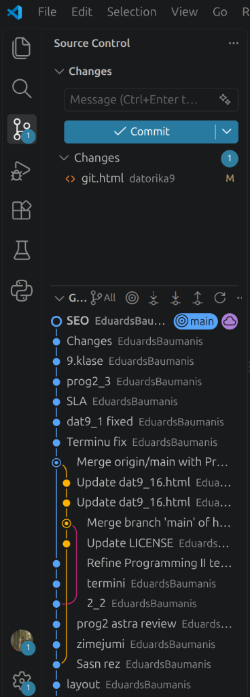

Git un GitHub špikeris
Praktiska VS Code Source Control atgādne un soli pa solim instrukcijas 9. klasei — visas ikdienas darbības veicam ar VS Code pogām, nevis terminālī.
Ātrais špikeris: trīs dažādas saglabāšanas darbības
9. klasē visas Git darbības veic VS Code kreisās malas sadaļā Source Control (atverama arī ar Ctrl+Shift+G). Neatceries komandas no galvas — seko trīs soļu secībai:
1. SOLIS · FAILĀ
Ctrl+S
Saglabā pašreizējo koda failu datorā. Pārlūks to redz pēc Ctrl+R, bet Git versija vēl nav izveidota.
2. SOLIS · VERSIJĀ DATORĀ
+ un Commit
Izvēlas mainītos failus (+) un saglabā darba pieturpunktu ar aprakstu šajā datorā.
3. SOLIS · INTERNETĀ
Sync Changes
Pirmoreiz Publish, vēlāk Sync Changes — nosūta saglabātās versijas uz tavu GitHub kontu.
| Ko vēlies izdarīt? | Kur spiest VS Code? | Rezultāts |
|---|---|---|
| Atvērt versiju vadību | Kreisajā joslā zaru ikona jeb Ctrl+Shift+G |
Atveras Source Control panelis. |
| Ieslēgt Git jaunai mapei | Source Control → Initialize Repository | Vienreiz sagatavo atvērto tēmas mapi darbam ar Git. |
| Sagatavot izmaiņas versijai | Pie Changes spied + (Stage All Changes) | Faili pāriet uz Staged Changes un tiks iekļauti nākamajā versijā. |
| Saglabāt darba versiju datorā | Ieraksti aprakstu laukā Message → spied ✓ Commit | Izveidots jauns pieturpunkts projekta vēsturē datorā. |
| Pirmoreiz publicēt mapi GitHub | Publish Branch / Publish to GitHub → public repository | Izveido jaunu GitHub projektu un augšupielādē failus. |
| Nosūtīt un saņemt izmaiņas | Sync Changes (vai … → Push / Pull) | Sinhronizē datorā saglabātās versijas ar GitHub. |
| Lejupielādēt savu projektu citā datorā | Source Control → Clone Repository (vai … → Clone) | Nokopē visu GitHub projektu uz Desktop. |
| Apskatīt, kas failā mainīts | Uzklikšķini uz faila nosaukuma sarakstā Changes | Atver salīdzinājumu: sarkanā krāsā izdzēstais, zaļā — pievienotais. |
Piemērs un pašpārbaude: kāpēc Sync Changes nenosūta nesaglabātu tekstu no redaktora?
Ja nomainīji spēles nosaukumu redaktorā, bet nenospiedi Ctrl+S, izmaiņa vēl nav ierakstīta pat failā datorā (pie cilnes nosaukuma redzams pelēks aplītis). Git strādā tikai ar saglabātiem failiem:
- Ctrl+S — ieraksta jauno tekstu failā datorā.
- Stage Changes (+) — pasaka Git, kurus saglabātos failus likt versijā.
- Commit ar ziņu “Precizēts spēles nosaukums” — izveido versiju datorā.
- Sync Changes — nosūta izveidoto versiju uz GitHub.
Ja pēc + nospiešanas failā vēl kaut ko izlabo, vēlreiz nospied Ctrl+S un +, lai arī jaunais labojums nonāktu versijā.
VS Code Source Control sadaļa: ko nozīmē katra iespēja?
Ekrānšāviņā redzams tipisks VS Code Source Control skats brīdī, kad viens fails (git.html) ir izmainīts un saglabāts ar Ctrl+S, bet vēl nav iekļauts jaunā Commit versijā. Salīdzini attēlu ar skaidrojumiem labajā pusē:

1. Kreisā malu josla (Activity Bar)
- Failu pārlūks (divu lapu ikona augšā,
Ctrl+Shift+E): atver projekta mapes un failu sarakstu (index.html,README.mdu. c.), kur veido un labo failus. - Meklēšana (lupa,
Ctrl+Shift+F): atrod vārdu vai frāzi visos atvērtās mapes failos. - Source Control (zaru ikona ar zilu 1,
Ctrl+Shift+G): 9. klasē galvenā Git darba vieta! Zilais skaitlis 1 rāda, cik failos pašlaik ir nesaglabātas Git izmaiņas. - Pārējās vidējās ikonas (atkļūdošanas vabolīte, 4 klucīši paplašinājumiem, kolba, Python): 9. klases datorikas uzdevumos tās nav jāizmanto.
- Apakšā — Accounts (cilvēka attēls) un zobrats (Settings): caur Accounts pieslēdzies savam GitHub kontam, lai VS Code drīkstētu nosūtīt failus. Atceries: pieslēgšanās šeit pati nenosūta failus un neaizstāj user.name / user.email!
2. Augšdaļa — Source Control un Changes (pašreizējais darbs)
- Trīs punkti … pie uzraksta Source Control: atver pilno Git izvēlni (Pull, Push, Sync, Clone, Commit), ja kāda poga nav redzama tieši panelī.
- Ievades lauks Message (Ctrl+Enter…): šeit pirms katra Commit obligāti ieraksti īsu aprakstu, ko izdarīji (piemēram,
Pievienots spēles apraksts). Zvaigznītes ✨ labajā malā ir MI ziņu ģenerators — stundās ziņu raksti pats vienā īsā frāzē. - Zilā poga ✓ Commit un bultiņa ▾: saglabā izvēlētās izmaiņas kā jaunu versiju datorā. Ar mazo bultiņu ▾ var izvēlēties arī Commit & Push vai Commit & Sync (saglabāt un uzreiz nosūtīt). Kad visi Commit ir saglabāti, šīs pogas vietā parādās Publish Branch (pirmoreiz) vai Sync Changes.
- Sadaļa ▾ Changes un skaitlis 1: uzskaita visus failus, kas mainīti kopš pēdējā Commit. Uzvedot peles kursoru uz vārda Changes vai uz faila rindas, parādās slēptās darbību ikonas:
- + (Stage Changes): sagatavo failu iekļaušanai nākamajā Commit (fails pāriet uz grupu Staged Changes).
- ↶ (Discard Changes): uzmanīgi! Neatgriezeniski izdzēš pēdējos labojumus un atgriež failu uz pēdējo Commit versiju.
- Faila ikona ar bultiņu (Open File): atver failu parastajā koda redaktorā.
- Faila rinda
<> git.html datorika9 M: rāda faila tipu (<>— HTML), faila nosaukumu (git.html), apakšmapi (datorika9) un stāvokļa burtu M. Uzklikšķinot uz šīs rindas, atveras salīdzināšanas skats (vecais un jaunais teksts blakus).
3. Ko nozīmē burti pie failiem labajā malā?
- M Modified (mainīts): jau iepriekš saglabātā failā veikti jauni labojumi.
- U Untracked (jauns fails): mapē izveidots pilnīgi jauns fails (piemēram,
12.htmlvai attēls), kurš vēl nekad nav bijis nevienā Commit. - A Added (pievienots): jauns fails pēc + nospiešanas ir iekļauts Staged Changes un gatavs pirmajam Commit.
- D Deleted (izdzēsts): fails ir izdzēsts no darba mapes.
- C Conflict (konflikts): viena un tā pati vieta labota divos datoros vienlaikus — nespied nejaušas pogas un pasauc skolotāju.
4. Apakšdaļa — Graph (versiju vēstures grafiks un pogas)
- Grafika augšējās rīkjoslas ikonas (no kreisās uz labo):
- ⑂ All — zaru filtrs (rāda visu zaru vēsturi).
- ◎ Go to Current History Item: aizritina vēsturi uz pašreizējo aktīvo versiju.
- ↓· Fetch (bultiņa uz punktu): pārbauda, vai GitHub ir jaunas izmaiņas, tās vēl neielādējot tavos failos.
- ↓ Pull (bultiņa lejup): lejupielādē un ielādē tavā datorā jaunākās izmaiņas no GitHub.
- ↑ Push (bultiņa augšup): augšupielādē tavā datorā saglabātos Commit uz GitHub.
- ↻ Refresh un … — atjauno grafika skatu un papildu iestatījumi.
- Katra rinda sarakstā ir viens saglabāts Commit (no jaunākā augšā līdz vecākajam apakšā): gaišais teksts (
SEO,Changes,9.klase,Terminu fixu. c.) ir Commit ziņa, bet pelēkais vārds blakus (EduardsBaumanis) ir autorauser.name. Uzklikšķinot uz jebkuras rindas, var apskatīt tajā reizē mainītos failus. - Birkas ◎ main un mākonis ☁: zilā birka main norāda pašreizējo galveno zaru datorā, bet violetais mākonis ☁ rāda, kura versija jau atrodas GitHub serverī. Ja main un ☁ stāv vienā rindā (kā attēlā pie
SEO), visas saglabātās versijas jau ir veiksmīgi nosūtītas uz GitHub! - Krāsainās līnijas un punkti kreisajā malā: zilā vertikālā līnija savieno versijas laika secībā. Dzeltenā un rozā blakus līnija ar ierakstiem
Merge …parāda vietas, kur divos datoros vai zaros paralēli taisītas izmaiņas ir apvienotas kopā. 9. klasē tu strādā tikai vienāmainzarā, tāpēc tava līnija parasti būs taisna un vienkrāsaina.
1. Kā ievietot user.name un user.email (pirms pirmā Commit)
Vide: GitHub pārlūkā → VS Code
Katram Commit vēsturē jāzina autora vārds (user.name) un e-pasts (user.email). Ja tie šajā datora kontā vēl nav saglabāti, spiežot Commit, VS Code parāda paziņojumu Make sure you configure your "user.name" and "user.email" in git. Pieslēgšanās ar pogu Accounts šos laukus neaizpilda — tie jāieraksta Git iestatījumu failā.
Kādu vārdu un e-pastu rakstīt? Kā name raksti savu GitHub lietotājvārdu (piemēram, JanisBerzins9a). Kā email vari izmantot sava GitHub konta e-pastu vai privātumam drošāko GitHub noreply adresi: atver pārlūkā GitHub → profila ikona augšā pa labi → Settings → Emails un nokopē tur redzamo adresi formā 12345678+Lietotajvards@users.noreply.github.com.
Paraugs ievietošanai (aizstāj labās puses tekstus ar saviem datiem):
[user]
name = TavsGitHubLietotajvards
email = tavs-epasts@users.noreply.github.comSoli pa solim bez termināļa (vienreiz visām tēmām šajā datorā)
- Nospied pogu Kopēt [user] paraugu augstāk.
- VS Code nospied Ctrl+O (File → Open File…). Apakšējā laukā File name kopā ar pēdiņām ieraksti
"%USERPROFILE%\.gitconfig"un spied Open. - Ja Windows paziņo, ka šāda faila vēl nav: spied Cancel, izveido tukšu lapu ar Ctrl+N, tad spied Ctrl+Shift+S (File → Save As…). Sarakstā Save as type izvēlies All Files (*.*), laukā File name kopā ar pēdiņām ieraksti
"%USERPROFILE%\.gitconfig"un spied Save. - Ja atvērtajā failā jau ir citas rindas (piemēram,
[core]), nedzēs tās — pārej uz pašu faila apakšu jaunā rindā un ar Ctrl+V ielīmē nokopēto[user]bloku. - Aizstāj
TavsGitHubLietotajvardsar savu GitHub lietotājvārdu untavs-epasts@users.noreply.github.comar savu e-pastu (bez pēdiņām). - Saglabā failu ar Ctrl+S un aizver
.gitconfigcilni ar ×.
Gatavs, kad: fails .gitconfig ir saglabāts (nav .gitconfig.txt), un, spiežot Commit sadaļā Source Control, kļūda par user.name vairs neparādās.
Rezerves varianti: tikai šīs tēmas mapē (.git\config) vai vienreiz caur VS Code Terminal
A) Tikai atvērtās tēmas mapē bez termināļa (ja lietotāja mape datorā ir ierobežota; sākot jaunu tēmu, šo soli atkārto):
- Atver savu tēmas mapi VS Code un sadaļā Source Control nospied Initialize Repository (ja projekts tikko sākts).
- VS Code spied File → Open File… (
Ctrl+O) un ieej savā tēmas mapē (piemēram,Desktop → datorika9-tema1). - Laukā File name ieraksti
.git\configun spied Open (mape.gitir paslēpta, tāpēc to ieraksta ar roku). - Neizdzēšot esošās rindas, pašās beigās ielīmē
[user]bloku ar savunameunemail, nospied Ctrl+S un aizverconfigcilni.
B) Vienreiz ar divām komandām VS Code Terminal (tikai šai sākotnējai iestatīšanai, ja skolā terminālis nav bloķēts — ikdienas darbam termināli 9. klasē neizmanto):
git config --global user.name "TavsGitHubLietotajvards"
git config --global user.email "tavs-epasts@users.noreply.github.com"Augšējā izvēlnē atver Terminal → New Terminal, ieraksti abas rindas ar saviem datiem, katras beigās nospied Enter, un aizver termināļa paneli ar ×. Turpmāk visam darbam izmanto tikai Source Control.
2. Pirmoreiz izveido un nosūti tēmas mapi uz GitHub
Vide: VS Code / Source Control → GitHub pārlūkā → VS Code
Katras jaunas tēmas sākumā (piemēram, datorika9-tema1 līdz datorika9-tema5) izpildi šos soļus, lai sasaistītu mapi ar jaunu GitHub projektu:
- Ar File → Open Folder atver tikai konkrētās tēmas mapi uz darbvirsmas, piemēram,
Desktop/datorika9-tema1. Uzmanību: nekad neatver visuDesktopmapi kopumā! - Ar File → Save All pārliecinies, ka tavi darba faili ir saglabāti. Atver Source Control (
Ctrl+Shift+G). - Ja redzi pogu Initialize Repository, nospied to.
- Sadaļā Changes uzved kursoru uz vārda Changes un nospied + (Stage All Changes), lai tavi mācību faili pārietu uz Staged Changes.
- Laukā Message ieraksti īsu aprakstu (piemēram,
Izveidota 1. tēmas mape) un spied zilo pogu ✓ Commit. (Ja prasauser.name, izpildi 1. instrukciju.) - Tagad parādās poga Publish Branch vai Publish to GitHub — nospied to. (Ja pogas nav, nospied
Ctrl+Shift+P, ierakstiPublish to GitHubun izvēlies to.) - Ja atveras pārlūks un prasa atļauju, pieslēdzies savam GitHub kontam, apstiprini piekļuvi (Authorize Visual Studio Code) un atgriezies VS Code.
- VS Code augšējā izvēlnē izvēlies Publish to GitHub public repository (publisks mācību projekts, lai skolotājs var atvērt saiti un 5. tēmā darbotos GitHub Pages). Pārbaudi nosaukumu, piemēram,
datorika9-tema1, un apstiprini. - Pārlūkā atver savu GitHub projektu un pārliecinies, ka tur redzami nosūtītie faili.
Gatavs, kad: GitHub projekta lapā internetā redzami tavi faili, bet VS Code Graph sadaļā birka main un mākonis ☁ stāv vienā rindā.
3. Ikdienas darbs: saglabā un nosūti nākamās izmaiņas
Vide: VS Code / Source Control → GitHub pārlūkā
Kad tēmas mape jau ir publicēta GitHub, pēc katra pabeigta uzdevuma vai stundas beigās izpildi piecus soļus:
- Saglabā visus atvērtos failus ar Ctrl+S vai File → Save All.
- Atver Source Control (
Ctrl+Shift+G). Pārskati sarakstu Changes un pie tā nospied + (Stage All Changes). - Laukā Message īsi uzraksti, ko izmainīji (piemēram,
Pievienota pogu pārslēgšana), un nospied ✓ Commit. - Nospied pogu Sync Changes (ja prasa apstiprinājumu logā, spied OK). Ja pogas nav, spied ↑ (Push) pie Graph vai … → Push.
- Atver vai ar Ctrl+R atjauno savu projektu GitHub pārlūkā un pārbaudi, ka failā redzams jaunākais kods.
Gatavs, kad: saraksts Changes ir tukšs, pie Source Control ikonas vairs nav cipara, un GitHub lapā redzama pēdējā izmaiņa.
4. Kā atvērt savu darbu nākamajā stundā vai citā datorā
Vide: VS Code / Source Control
Izvēlies vienu no diviem gadījumiem atkarībā no tā, vai šajā datorā tava tēmas mape jau eksistē:
A) Mape jau ir uz šī datora Desktop
- VS Code spied File → Open Folder un atver savu tēmas mapi uz Desktop.
- Atver Source Control (
Ctrl+Shift+G). - Ja iepriekš strādāji mājās vai pie cita klases datora, pirms koda labošanas nospied Sync Changes vai … → Pull (vai ↓ pie Graph), lai saņemtu jaunāko versiju no GitHub.
B) Šajā datorā mapes vēl nav
- Neveido tukšu mapi ar roku — atver VS Code un sadaļā Source Control spied Clone Repository (vai … → Clone).
- Augšējā laukā ielīmē sava GitHub projekta adresi (piemēram,
https://github.com/lietotajs/datorika9-tema1) un spied Enter. - Kā saglabāšanas vietu izvēlies Desktop un pēc lejupielādes nospied Open.
5. Lapas pārbaude pārlūkā un kādu saiti iesniegt
Vide: Windows → pārlūks → GitHub
- Windows failu pārlūkā atver savu tēmas mapi uz darbvirsmas (
Desktop). - Uz sava HTML faila (piemēram,
11.htmlvaiindex.html) nospied peles labo pogu un izvēlies Open with → Microsoft Edge (vai Chrome). - Katru reizi pēc koda izmaiņas VS Code nospied Ctrl+S, bet pārlūkā nospied Ctrl+R, lai ieraudzītu atjaunoto lapu.
Nesajauc trīs dažādas adreses iesniegšanas brīdī!
| Adreses izskats | Kas tas ir? | Vai drīkst iesniegt kā saiti? |
|---|---|---|
file:///C:/Users/.../index.html |
Ceļš uz failu tikai tavā datorā. | Nē! Skolotāja datorā šī saite neatvērsies. |
https://github.com/lietotajs/datorika9-tema1 |
GitHub projekta (krātuves) saite — rāda koda failus, Commit vēsturi un README.md. |
Jā — iesniedz katras tēmas noslēgumā. |
https://lietotajs.github.io/datorika9-tema5/ |
GitHub Pages spēles saite — atver pašu spēli internetā kā gatavu mājaslapu. | Jā — iesniedz 5. tēmas beigās kopā ar projekta saiti. |
Atgādne 5.6. nodarbībai: kā ieslēgt GitHub Pages savai spēlei
- Pārliecinies, ka galvenais spēles fails saucas tieši
index.html(ar mazajiem burtiem), atrodas tēmas pamatmapē un ir nosūtīts uz GitHub ar Commit un Sync Changes. - GitHub projekta lapā atver augšējo cilni Settings un kreisajā izvēlnē spied Pages.
- Zem Build and deployment → Source atstāj Deploy from a branch, bet pie Branch izvēlies main un mapi /(root), tad spied Save.
- Pēc 1–2 minūtēm atjauno šo pašu Pages lapu ar Ctrl+R — augšdaļā parādīsies tava publiskā spēles saite (Visit site).
Ja parādās kļūda vai šķērslis
| Ko redzi ekrānā? | Ko darīt? |
|---|---|
| Prasa user.name vai user.email (Make sure you configure your "user.name" and "user.email" in git) |
Atver šīs lapas 1. instrukciju, ievieto [user] bloku ar savu vārdu un e-pastu failā .gitconfig (vai .git\config), saglabā ar Ctrl+S un mēģini Commit vēlreiz. |
| Source Control nerāda izmaiņas vai saka Nothing to commit | 1) Redaktorā nospied Ctrl+S (ja pie faila cilnes ir aplītis, fails vēl nav saglabāts). 2) Pārbaudi, vai ar File → Open Folder esi atvēris tieši to mapi, kurā labo failu. |
| Pie Changes pēkšņi ir desmitiem vai simtiem svešu failu | Iespējams, nejauši atvēri un inicializēji visu Desktop vai lietotāja mapi! Nespied Commit un pasauc skolotāju — Git jāieslēdz tikai konkrētās tēmas mapē (piem., Desktop/datorika9-tema1). |
Spiežot Commit, atveras jauns teksts COMMIT_EDITMSG |
Aizmirsi pirms tam ierakstīt ziņu laukā Message. Aizver COMMIT_EDITMSG cilni, ieraksti īsu aprakstu laukā Message kreisajā panelī un spied ✓ Commit vēlreiz. |
| GitHub mājaslapā joprojām rāda veco kodu | Commit saglabā versiju tikai datorā! VS Code nospied Sync Changes (vai ↑ Push pie Graph), sagaidi nosūtīšanas beigas un GitHub lapā nospied Ctrl+R. |
| Sync Changes / Push neizdodas vai rāda konfliktu (C) | Pārbaudi interneta savienojumu un to, vai apakšējā kreisajā stūrī pie Accounts esi pieslēdzies savam GitHub kontam. Ja ziņojumā minēts conflict vai rejected, neizvēlies nejaušas pogas — parādi paziņojumu skolotājam. |
| Sabojāji kodu un gribi atgriezties uz pēdējo Commit | Ja kļūdainais labojums vēl nav iekomitots, sadaļā Changes uzved peli uz faila un spied ↶ (Discard Changes). Uzmanību: viss kopš pēdējā Commit rakstītais šajā failā tiks dzēsts! |
| VS Code rāda Git not found / Install Git | Datorā nav uzstādīts Git vai VS Code tika atvērts pirms uzstādīšanas. Palūdz skolotājam uzstādīt Git, pēc tam pilnībā aizver un no jauna atver VS Code. |
Skolotājam: sagatavošana un avoti
Pirms stundas datoros jābūt uzstādītam Git un katra skolēna Windows kontā (%USERPROFILE%\.gitconfig) vai tēmas mapē (.git\config) jāsagatavo Git autora vārds un e-pasts. GitHub konta pieslēgšana sadaļā Accounts neaizstāj šos iestatījumus. Skatīt
skolotāja piezīmes.
VS Code darbību nosaukumi pārbaudīti pēc oficiālās Source Control pamācības un pārskata. Git konfigurācija: Git dokumentācija. GitHub Pages: publicēšanas avota iestatīšana.